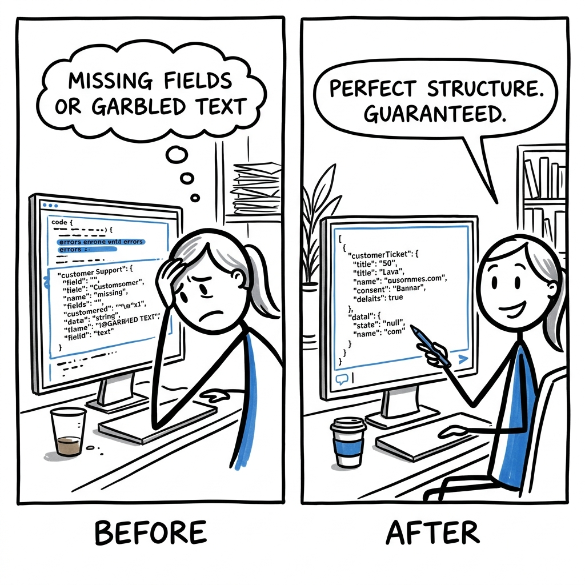

Sarah, a junior developer, struggles to automate customer support, as the AI frequently outputs ticket details with missing fields or garbled text. She spends hours writing brittle scripts to manually clean and reformat this inconsistent data, so her real competitor isn't another AI tool, it's her hand-coded string parsing logic.

The trade it makes versus the dominant alternative.
What it gives up
- Outlines requires users to manage their own model deployment and infrastructure for local execution, unlike hosted API services.
- It does not offer proprietary, state-of-the-art LLMs, relying instead on existing open-source models or third-party APIs.
- Users must handle multiple API keys or local setups instead of a single, unified billing relationship with one provider.
- For black-box API models, Outlines' control over generation is limited by the structured output features the specific API exposes.
What it gets in return
- Outlines offers true provider independence, allowing users to switch between many local and API models with the same structured generation API.
- It provides full, low-level control over the structured generation process for local models by directly masking invalid tokens, enabling advanced constraint types like CFG.
- By supporting local execution, Outlines enables privacy-sensitive applications where data never leaves the user's controlled environment.
- It can significantly reduce costs for structured generation by removing token-based billing for the constraint mechanism itself when running locally.
OpenAI's business model relies on charging per-token for access to their proprietary, hosted models. Offering a free, open-source library like Outlines that enables guaranteed structured output for any model (including competitors' or local models) would directly cannibalize their API revenue and devalue their own built-in structured output features. For LangChain, their core architectural paradigm is high-level orchestration and post-hoc parsing. To adopt Outlines' during-generation, token-level control would require a fundamental re-architecture of their framework, disrupting their existing component-based design and value proposition, which is focused on building applications rather than deep generation control.
Four dimensions that actually split the field.
- How Output Is Structured: Does the tool make sure the AI's answer follows a specific format while it's being written, or does it try to fix the answer after it's done?
- Where Models Run: Can you use this tool with AI models on your own computer, or only with models running on someone else's online server?
- Code Is Public: Can you see and change the core computer program instructions that make the structured output work?
- Main Use Case: Is the tool mostly about precisely controlling how the AI writes text, or is it more about building full AI applications that use many tools?
| Product | How Output Is Structured | Where Models Run | Code Is Public | Main Use Case |
|---|---|---|---|---|
| Outlines (This product) | During generationOutlines guarantees structured outputs during generation by masking invalid tokens for local models or using provider-specific features for APIs (README). | AnywhereSupports local models (Transformers, Llama.cpp) and various API providers (OpenAI, Anthropic, Gemini, Ollama, etc.). | OpenThe entire library is open-source under the Apache 2.0 license, allowing full inspection and modification (LICENSE). | Output controlIts core focus is to provide a Pythonic interface for 'structured outputs for LLMs' and 'guaranteed valid structure' directly from the model. |
| OpenAI API | During generationOpenAI offers features like JSON Mode and Function Calling to guide model outputs into specific formats while generating. | Online-onlyYou must send requests to OpenAI's cloud servers; models cannot be run on your own hardware. | ClosedThe internal workings of OpenAI's models and their structured output implementation are proprietary and not publicly visible. | API serviceIt provides a hosted service to access powerful large language models and their specialized capabilities. |
| Guidance (Microsoft Research) | During generationThis library uses a domain-specific language (DSL) to specify output formats and applies token-level masking to enforce them. | Local-onlyPrimarily designed for direct control over local HuggingFace Transformers models, running on your own hardware. | OpenThe entire library is open-source under the MIT license, allowing full inspection and modification. | Output controlIts primary goal is to program LLMs to produce specific, constrained outputs with high precision. |
| LangChain | After generationLangChain typically prompts LLMs to produce structured text (e.g., JSON) and then uses parsers to validate and extract information from the generated response. | AnywhereIt can integrate with both local models (e.g., via HuggingFacePipeline) and various online API models. | OpenThe entire library is open-source under the MIT license, allowing full inspection and modification. | App orchestrationIt provides a framework for building complex LLM applications by chaining together different components like models, prompts, and tools. |
Features hiding in the codebase that the README doesn't advertise. Each one is a bet about where the product is going.
- 1Domain-specific data typesoutlines/types/airports.py, outlines/types/countries.py, outlines/types/locale/us.py, pyproject.tomlThe product anticipates strong demand for highly precise, domain-specific data extraction in niche industries (e.g., travel, logistics), leveraging external data sources for strict data compliance. This targets enterprise use cases requiring validated codes.
- 2Persistent call cachingoutlines/caching.pyThe product anticipates heavy, repetitive usage of LLM calls, making performance optimization and cost-saving through persistent memoization a core value proposition. This improves developer iteration speed and reduces API costs for users.
- 3Pluggable generation backendsoutlines/backends/, pyproject.toml (for
llguidance,xgrammaroptional dependencies)The project hedges against single-backend limitations, betting on a future where different FSM/regex engines offer varying performance or capabilities. This allows rapid adoption of new, optimized constraint engines for different use cases. - 4Standardized API error handlingoutlines/exceptions.pyThe product commits to enterprise-grade reliability and ease of debugging for LLM integrations, abstracting away vendor-specific API error complexities into a unified, actionable exception hierarchy.
- 5Generic multimodal input abstractionoutlines/inputs.py, outlines/models/transformers.py#TransformersMultiModalThe product is proactively building foundational support for future multimodal LLM capabilities, providing a flexible input interface (Image, Audio, Video) even for data types not yet fully integrated with structured output.
- 6Comprehensive asynchronous API supportoutlines/models/ (many
Async*files), outlines/models/base.py#AsyncModelThe project anticipates high-throughput, low-latency LLM applications, positioning itself as a scalable solution for concurrent API interactions, which is critical for real-time services and backend systems.
Features every competitor ships that this codebase deliberately doesn't. Strategy is choosing what not to do.
- 1No user account systemNo
UserorAccountmodels, no authentication/authorization logic, no user management APIs or UI components.Focuses on core LLM interaction as a developer library, avoiding the immense overhead and security concerns of building and maintaining a multi-tenant user platform. This may limit direct monetization or full-stack integration opportunities. - 2No LLM analytics dashboardNo database schemas for logging LLM call metrics (tokens, latency, cost), no aggregation logic or UI components for performance monitoring.Keeps the library lean and focused on generation, not observability. It relies on users to integrate with existing external monitoring solutions, which might be a barrier for smaller teams.
- 3No integrated RAG pipelineNo embedding model interfaces, vector database client integrations, or comprehensive document indexing/retrieval components within the core library. The 'Q&A with Citations' is an example, not a feature.Maintains a sharp focus on structured generation, enabling users to integrate their preferred RAG solutions (which is a fast-moving, complex space) rather than dictating a specific retrieval stack.
- 4No advanced multi-agent orchestrationThe 'ReAct Agent' is an example of structured tool use; no generic interfaces for agent communication, shared memory, or complex, multi-step planning across multiple agents.Avoids the rapidly evolving complexity of multi-agent systems, focusing on the fundamental capability (reliable function calling/structured output) that underpins agentic behavior, ensuring broad compatibility.
- 5No dedicated mobile SDKsAbsence of platform-specific codebases (e.g., Swift, Kotlin) or mobile-focused build pipelines. The project is Python-centric.Prioritizes deep integration for server-side Python applications, avoiding the high cost and fragmentation of maintaining native mobile development kits. Assumes mobile clients will interact via an API gateway.
- 6No direct payment processingNo
stripeorpaypaldependencies, noPaymentorOrdermodels, no webhook handlers for payment events.Stays within the domain of LLM utility, avoiding the specialized and highly regulated complexities of financial operations. This keeps the product scope focused on AI value, not business operations or e-commerce transactions.